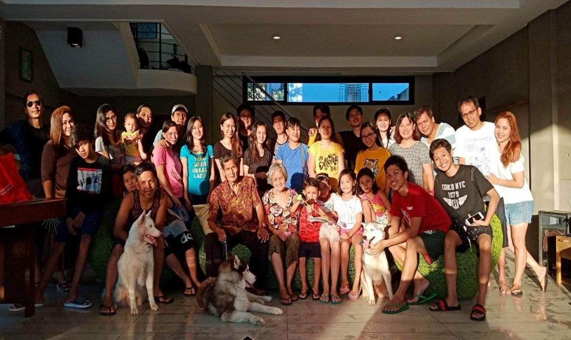
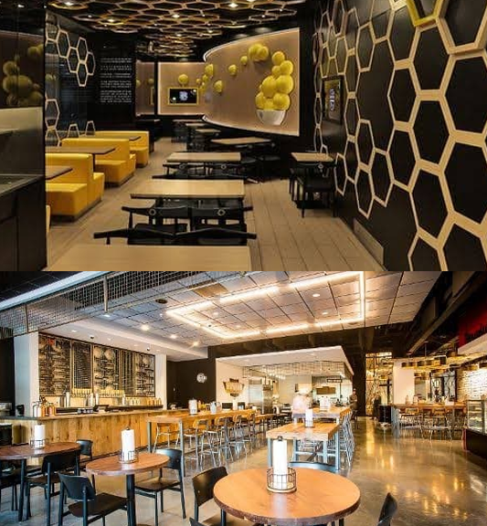
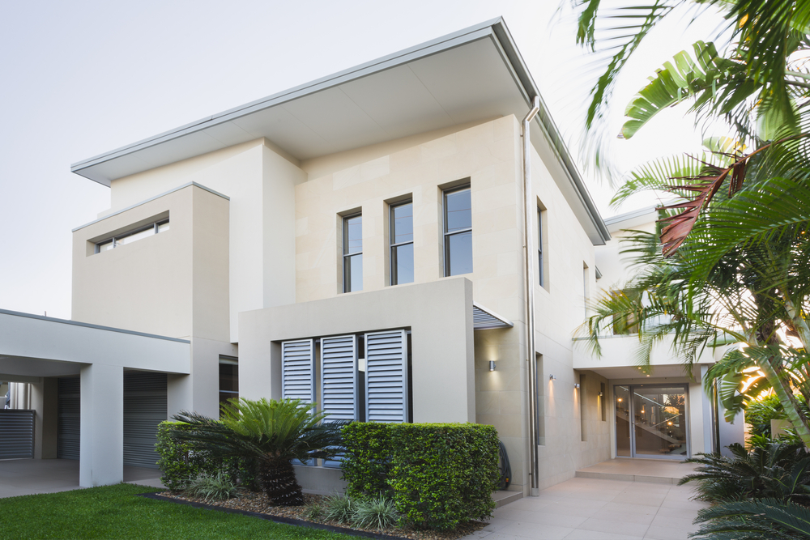
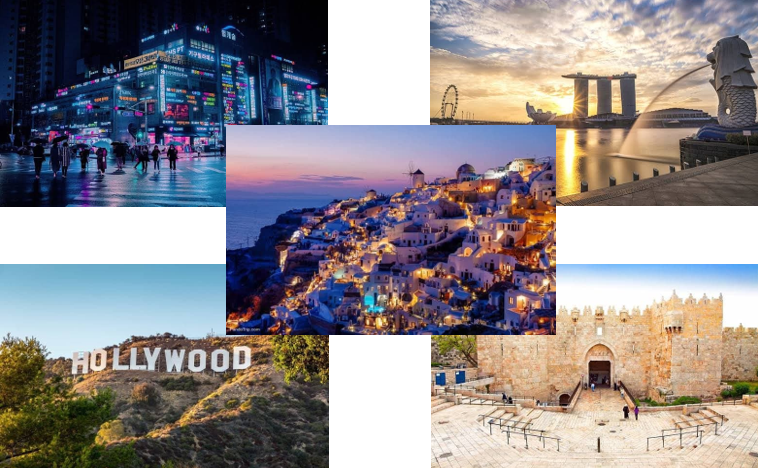
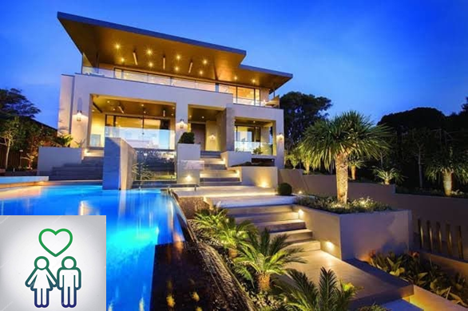
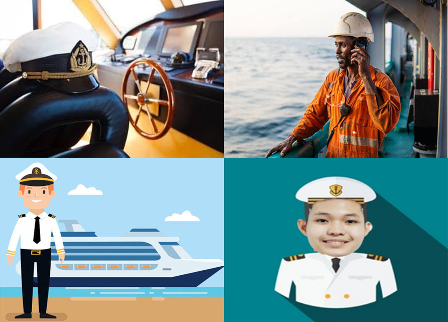
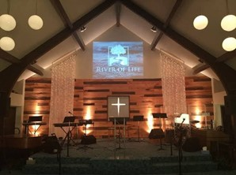
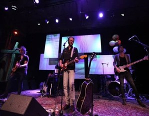
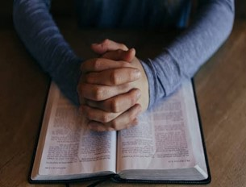

My Dreams
| •FAMILY |
| 1. First and foremost, one of my greatest desire since I was just a child is to have a great bond and relationship with my family and I want it to stay forever. |
|  |
| 2. Ever since then, both of my parents wanted to have our own family business to have a stable income. Particularly, a business related to food industry, since my father's side was a clan of cook's and my mother was also prominent in cooking. Everytime there's an event like birthday or holidays such as christmas and new year. All of them help on another in cooking. Their dishes was not just common foods that we see during Filipino occasions, some of those are more innovative and creative dishes. Back then, our family owns a karinderya, now I want to have a much better business which is more developed and improved type of food business which is a restaurant or a small cafe. I want it to be black colored themed with a minimalist style and design. |
|  |
| 3. Next, I want my family to have a better and bigger house. And I dreamed it to be at Nasugbu Batangas City wherein there is a lot of wonderful beaches. I want to it to be colored in pure white, and be at a location where there is a lot of trees and beautiful landscape views. |
|  |
| 4. One of my aspirations since then was to travel with my whole family. I want it to be memorable and to start with, I want to travel to the nearest country first. It is the South Korea, in an autumn season where we can see cherry blossoms as well as to try their dishes. Next is, Singapore which also an Asian country. They have impressive building structures that I want to see in person including their shopping malls. Thrid one is Los Angeles USA. The reason I want to travel in this specific country is because I visit the santa monica beach as well as the Hollywood boulevard. Fourth is Israel, my father was already been here since he works in this country as an OFW until now. But I still want to travel there with him to see those holy places and interesting stories of every spot. Finally, not the last one since I want to travel to many countries, but these are the ones I most prefer. So the fifth one is Greece, I really love to see their stunning lagoons and excellent structures of their buildings and houses which is worth to see. |
|  |
| •PERSONAL |
| 1.For myself, I want to have my own house for my future family. Specifically, I want it to be color white as well and be located at Tagaytay city which is my favorite province. Furthermore, I also want to find true love and the women who will be the mother of my children. I want a woman who is a God fearing person as well as a woman who also have a lot of goals for her family and for our relationship. |
|  |
| •CAREER |
| 1. When I was a child I didn't really think or dream much about to be a seafarer. However, when I heard from my father that it is also his dream, but unfortunately he didn't pursue it and finish a different course. So I'm encouraged by him to be a seaman, as well as when I became more matured I realized how interesting and challenging to be a seafarer. |
|  |
| 2. Actually being an aviator or a person who works with airplanes, as well as an IT specialist is just part of my secondary choices. If I will be not qualified to be a seafarer, both of these choices are the possible careers where I would go to. |
| •SPIRITUAL |
| 1. Back then, my family runs a baptist church, since my Father is also a Pastor but working now as an OFW in Israel. They decided to close it for another reason that we have no a place or room to have church services since it is quite expensive to rent one. And my family's dream was to bring back that church and have our own establishment. |
|  |
| 2. Every sunday me and my family always attend to Victory Fort Bonifacio, and I want to be part of the music team in the youth unfortunately pandemic stikes and I didn't have the time to apply to become part of the music team. |
|  |
| 3. Ofcourse, being part of a Christian family, I really want to have stronger personal relationship with God which is our one and only saviour. |
|  |
| 4. I'm lucky to be part of a Christian family, and one of my desires was to have confidence to share the Gospel or the word of God to other people to encourage more people to accept Christ as their Lord and Saviour. |